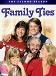
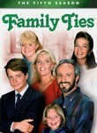

Family Ties
Stephen Klancher
...has seen 1
...has seen 0 hours
...has not seen 2.9 hours

Timeline
Most Recent:
Remembrances of Things Past (1)
...has seen 1
...has seen 0 hours
...has not seen 2.9 hours
Timeline
Most Recent:
Remembrances of Things Past (1)


Stephen Klancher: March 29, 1985 
Appearently my mom watched this right after I was born. I suppose that means I "watched" it.
